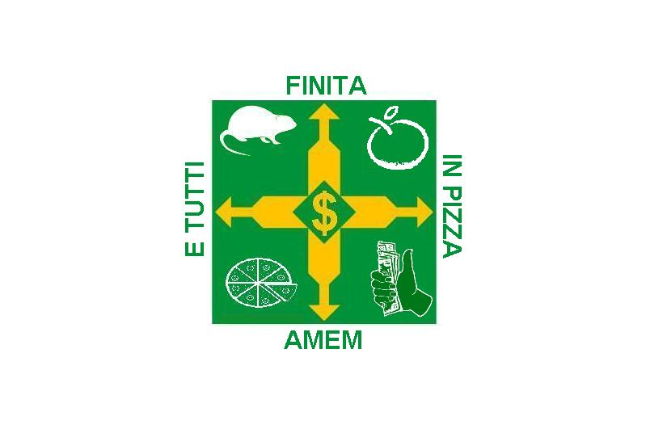

| estado | populaçao | capital | regiao | bandeira |
|---|---|---|---|---|
| Santa Catarina | 8.058.441 | FLorianopolis | Sul | |
| Minas Gerais | 20.500.500 | Belo Horizonte | Meio | |
| Acre | 830.018 | Archaeopteryx | Canto | |
| Sergipe | 2.210.000 | Renegade | Outro Canto | |
| DF | 2.800 | Planalto | Meio |  |
| Mato Grosso | 3.658.649 | Grama Esmeralda | Meio | |
| A lagoas | 3.127.683 | Poça | Outro canto | |
| Espirito Santo | 3.833.712 | Pai | Outro canto | |
| Bahia | 14.141.626 | Salvador Dali | Outro canto | |
| Piaui | 3.271.199 | Whinderson Nunes | Outro canto | |
| Amapá | 733.759 | Macapá | Norte | |
| Amazonas | 4.281.209 | Manaus | Norte | |
| Ceará | 9.233.656 | Fortaleza | Nordeste | |
| Goiás | 7.056.495 | Goiânia | Centro-Oeste | |
| Maranhão | 6.775.152 | São Luís | Nordeste | |
| Mato Grosso do Sul | 2.901.895 | Campo Grande | Centro-Oeste | |
| Rio de Janeiro | 16.055.174 | Cidade do Rio de Janeiro | Sudeste | |
| Pará | |
|||
| Paraíba | |
|||
| Paraná | |
|||
| Pernambuco | |
|||
| Rio Grande do Norte | |
|||
| Rio Grande do Sul | |
|||
| Rondônia | |
|||
| Roraima | |
|||
| Tocantins | |
|||
| São Paulo | |